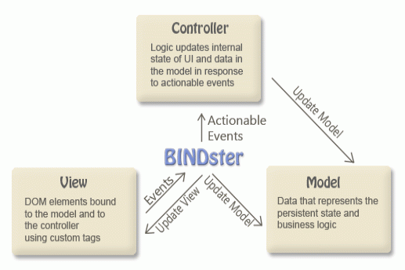

BINDster is an alternative to using HTML templates to create dynamic web applications. BINDster creates a real-time bi-directional link between the DOM and your Javascript object. By using iteration and conditional constructs all of the flexibility of templating is preserved. Because the linkage is bi-directional there is no nead for events to capture changes to form elements.
The best way to think of BINDster is in the context of a model, view, controller. BINDster is the glue that "binds" the model to the view.
As the user enters data into form elements in the view, the model is automatically updated. Your controller responds to events like a user clicking on a action. After processing these events BINDster compares the model to the DOM and any changes are reflected in the DOM.
The key features include:
Binding, conditional constructs and iteration are declared directly in the HTML using BINDster-specific attributes in a custom name space so the binding is always clear. If you prefer not to adorn your HTML with BINDster-specific attributes all functions may be applied in Javascript using selectors.
What would the world be like without a "Hello". For BINDster's Hello World add this to your header to include bindster:
Create your model. The model can either be a prototyped object or a JSON object. Here we show a simple JSON object that has a single property called world:
Create your view. This view has two elements, each of which is bound to the world property in the model. The immediate prameter forces the model to be updated immediatly (e.g. as you type) vs. when the input loses focus:
Bind the model to the view by creating a new instance of Bindster and passing it a new instance of your model. This goes just before </BODY>
And here it is. Enter text in the control to see how it works
For those that prefer not to introduce name spaces all bindster attributes are also available using data-xxx where xxx is the specific bindster attribute.
Binding individual variables is usefull but binding repeating data is a lot more interesting. Let's say we want a simple address book with a name and email address. Here is the model:
The iterate tag will clone all of it's child nodes for each element in the array specified by the on attribute. The index attribute causes it to set a property to the ordinal position of the array element being iterated. This let's you bind to the specific array element. In this case the array is addresses, the index property ax
And the results look like this
For those that prefer not to introduce name spaces simply apply data-iterate-on and data-iterate-index directy on the <tr>:
To do anything useful we need events. With BINDster you need events only for real-world actions that that user can take such as clicking on a button. We will extend the iteration example to to allow the array of addresses to be added and deleted.
To do this we need a controller that will handle the add and delete actions
The Controller class is where you put functions that can be referred to in event handlers. When referencing data in the model you must refer to the model properties as this.model.propname or this.m.propname
The event tags must be prefixed with b: (or data-) so that BINDster has the opportunity to refresh the DOM after the event is processed.
You must also tell BINDster about your controller:
And the results look like this
BINDSter uses conditional constructs similar to those found in templating systems to control what is displayed. The conditions are usually based on testing properties in the model that serve as states for the applications.
We will extend the previous sample application to include a popup that allows the address to be edited. This popup is only displayed when the popup property is true. The popup binds directly to a temporary reference to the current address.
Our main iteration of the addresses has a couple of new elements
First you can see that we introduced the b:with on the iteration. This is simply a short cut for using indexes when referencing elements of an array being iterated. On line 55 you see a link that sets popup to true and also sets the temporary current_address property.
One other type of conditional expression is found on line 43. Any HTML attribute can be prefixed with a b: (or data-) and then a javascript expression may be embedded with {} to compute a value. Here we are setting the class to 'active' when the current index is equal to the index being iterated.
Variables being referred to in the BINDSter tags must be defined in the model. popup and current_ax have been added. edit_address should probably also be added but we did not to illustrate that when using b:if the children are not present when the condition is false and so BINDster will not complain about not finding edit_address
Finaly some tweaks are needed to the controller to setup edit_address when a new address is added:
Here is what the application looks like:
BINDSter lets you map custom tags that effectively extend HTML. You can define your own attributes and map them to an HTML template that will be substituted for the element using the custome tags. This is equivalent to having HTML macros.
You can define an HTML template that will be used to wrap elements based on a selector expression. For example you could define a "wrapper" that took all anchor elements and wrapped them in a structure that would create rounded corners
Single page applications need to support the back button and also to be able to define their state using unique URLs. BINDster uses hashmarks to accomplish this. Just define named anchors define what state properties are to be set when that anchor is linked to. Then if all internal links in the application use the hash marks the back button will work properly. This document is an example of navigating with hash marks.
Asside from simple bindings to input fields, BINDSter can map to select inputs (dropdowns), automatically filling them with name/value pairs. It can also map to sets of radio buttons and check boxes.
A controler plug-in structure allows binding to complex UI controls such as sliders
Binding would not be very useful if there was no formatting or parsing. Formatters and parsers can be used to translate data as it is marshalled back and forth between form fields and the model. This transforms the model from just being a view model into being a richer object model
You can ensure that your model never gets bad data through parsing. BINDster is smart enough to keep a shadow copy of "bad" values so the user will always see the bad data until it is corrected but it is never marshalled into the model.
Most templating systems use innerHTML which means that malicious data input by users could potentially end up in HTML and causing script to be executed. BINDSter does not use innerHTML and only sets the value of DOM elements.
Hosted on github under the MIT license.
BINDster's preferred method of declaring binding is to use namespaces for BINDSter specific tags and attributes. HTML 5 does not specifically support namespaces but tollerates them mainly for the benefit of popular namespaces such as SVG and MathML. All modern browsers tollerate them for this reason and also because Facebook uses it's own name space for XFBML. However, other binding frameworks have chosen to use the data-xxx attributes of HTML 5 and this method is fully supported by BINDSter as well. To use the data-xxx style do the following:
We feel that that the use of namespaces makes the HTML very clear and given the fact that this works with all modern browsers we feel it is worthwhile. Still it is your code and you need to decide which way is best of your project. If you use namespaces you should be aware of several issues:
Additionally all binding information can be specified by code in the controller and/or in the model. We don't like to prescribe any particular design pattern on you and in fact go out of our way to be flexible in terms of specifying binding information in the model, view and controller.
Binding connects data to a form field or other DOM element. The connection can be single directional which simply evaluates an expression and populates the value of a DOM element with the result of an expression or it can be bi-directional such that it links a form field with JavaScript variable or propery.
The b:bind attribute contains a Javascript expression the result of which will be used to set the value of the element containing the attribute. If the expression is not a string constant (e.g. does not begin with a quote) and the element containing the attribute is a form field then the binding is bi-directional. In that case BINDster will create an event that can update a property or JavaScript variable. Anytime an event is processed BINDster checks to see if the model is still in sync with the DOM and will update the DOM if needed. Bi-directional binding can be performed on these types of form fields:
All other elements have single directional binding. This also means that they can use expressions
b:bind expressions are evaluated in the context of the model, the controller and the global scope in that order. This means properties in the model need no qualification. Sometimes people prefer to put variables that are really releated to rendering (e.g. indexes, states etc) in the controller. You can put variables in the controller by simply declaring them in the controller and not in the model or you can explicityly qualify them by prefixing them with c. or controller.
The update expression is executed from events in the element containing the bind attribute. The event depends on the type of element and on whether the b:when attribute is also present. In general updates occur when the form element loses focus, it's value is changed by clicking on it (radio buttons and checkboxes) or when it's value is changed by dropping down and selecting a value (select drop-downs). In the case of input text and password fields b:when can be used to specify the number milliseconds before BINDster will decide to pass through the DOM and determine whether updates need to be made.
The entire view is traversed everytime there is an event that could potentially change data in the model. As the view is traversed a cached value of the DOM element is compared with result of evaluating the bind expression and if there is a change the DOM element is updated. This provides adaquate speed such that the developer never needs to explicitly force the updating of the DOM when bound elements change.
There are times when the model may change other than as a result of binding. For example when server requests are made or when web workers complete a task. In that case the controller has a mehod injected called refresh which will schedule a resync of the DOM and the model.
When binding to selects these attributes are used:
When binding to a check box you need to specify the values when the box is checked or unchecked
When binding to a set of radio buttons you need to specify the value that determines whether the ratio button is checked.
As with all radio buttons the name attribute makes them into a group
Iteration is the process of repeating nodes in the dom for each row in a corresponding array. Practically this is equivalent iteration in a templating system. The difference is that iteration is achieved by cloning nodes. Each time the DOM is rendered it is synchronized with the current contents of the corresponding array. This means that the iteration is dynamically kept in sync with changing values in the array. Each iteration may reference either through binding or in conditional expressings a specific row in the array
Iteration can be applied using the <b:iterate> tag.
Consider this simple example of iteration
and note the following:
Here is the working example:
The b:iterate is provided for convenience. Whenever you use a tag in the BINDster namespace, the attributes of the tag are prefixed with the name of the tag. So the real attribute names for the iteration attributes are b:iterateon, b:iteratewith, b:interateindex, b:interatecounter, b:iteratefilter. You can apply iteration to any element by using the real attribute names
Conditional expressions allow DOM elements to be appear and disappear based on the value of properties in the model. Just like with binding, the behaviour is immediate when the properties in the model are changed by the controller. There attributes which control the hiding and showing of elements:
This sample shows how elements are shown and hidden
BINDSter also can bind values to most CSS attributes. To do this:
The expression is evaluated in the context of the model so references to the model need no qualification. You can use this on all attributes execpt for events (onxxxxx) because events are already interpreted as JS expressions
Mappers allow you to create your own tags that take will insert a document fragment in place of the tag while mapping attributes in the custom tag into the document fragment. The custome tags and document fragment are defined using
<tag name="tag name">Document framgement (HTML)</tag>
Within the document fragment you can use __attribute name__ to include the value of an attribute when the fragement is copied upon usage.
They are useful both for creating re-usable components. Here is simple mapper that defines a graphic button
A couple of things to note:
You can use conditionals in a mapper though they are generated and then evaluated. Here is an example of a mapper that generates standard HTML for form fields using the common <dt></dt><dd></dt></dl> pattern
Wrappers allow DOM element to be "wrapped" within a document fragment. The wrapping is done based on selectors so any element of a particular class/id/tag specification can be wrapped. The wrappers are defined by applying the b:wrappername="wrapper name" to a container that then becomes a document fragement that will be used to wrap elements that reference it. The fragment should contain <insert></insert> to indicate where the referenced element should be copied. The DOM element that matches the selector and all it's descendands will be inserted into the document fragment and then document fragment replaces the original element.
This example will wrap any element with a class of super_rounded with a table structure tha can produce rounded corners.
Dyanamic applications will often present multiple steps or states. Rather than each one being a seperate page that is loaded by the browser this often achieved by simply showing and hiding portions of the view. There are two problems with this
Bookmarks (named anchors) solve both of these issues and BINDster makes it easy to incorporate them in an application.
To use this technique place <a name="hash value url suffix" b:onarrival="code to establish state"></a> in front of each state. The "code to establish state" will generally be code that sets everything needed to put your application in the state it needs to be in. Then when you want to provide a link that takes you to that particular state you simply go to the "#hash value url suffix". BINDster will detect that a new URL has is present and execute the "code to establish state".
This documentation uses named anchors to navigate through the document.
A few things to note:
The data in the model should be in a form that makes it useful for computing rather than displaying. The data you see in your view needs to be formatted as expected by the user. Data binding in BINDster provides:
Parsers should do the following:
Here is an example of a parser:
Validators are similar to parsers but generally are not expected to have to parse the values. The validators are called after the parser. The should do the following:
Here is an example of a validator:
A special tag that allows the text of errors to be defined directly in the view to keep text out of the controller. This makes multi-lingual applications easier to manage since only the view need be modified. They are defined as:
lt;message name="error name" value="error message"></message>
The "error name" is a name that is referred to by the parser or validator when they throw an error. It is the message property of the object that they throw. The "erro name" is the error string and may inclue {property references} within curly braces that inject values from other properties that are in the object being thrown by a parser or validator. Here is an example
It is customary to place an error message in view, often next to the field that is in error. BINDster has two attributes that help with this:
Here is a complete example:
Formatters should do the following:
Here is an example of a formatter:
Forms leverage all of the features of binding as well as parsers, formatters and validators. Putting all of these things together you can create very robust forms with flexible and intuitive validation. This example shows all the features for form handling.
The form fields themselves use custom tags:
The custom tag is a mapper which will include the correct form field based on the paramters
The mapper also contains an error field at the end that is bound to any errors assocatiated with the binding using b:binderror and b:binderrordata. The latter supplies a field name (reusing the field label) for the benefit of any error declartions which can now include {field}
Here are the messages
And here is the controller which contains all of the formatters, parsers and validators
It also has a submit function at line 15. The submit function calls the validate method which is injected into the controller. This method will run through all of the validation mostly to catch any fields that are required. It then calls another injected method hasErrors to see if there are any outstanding errors.
One of the principal design philosopies of BINDster is that it should support rich object modes rather than simply a view model. This principal is supported by a validation framework that keep bad data out of the model and by the ability to incorporate validation into the model in a way that can be reflected in the UI.
BINDSter also strives to be pattern agonostic and provide flexibility in terms of where you supply binding criteria so that it will fit best with your own patterns. Binding can be specified in:
In the preRenderInitialize of your controller you may call the attr method to assign any BINDster attribute to a DOM element using a selector:
where ...
Here is an onclick event defined within the controller for a button with an id of "submit"
Attribute selectors have one additional feature which is that they can select DOM objects that are bound to a particular property. This lets you specify only the data binding in the view and have it double as identifier by which other more verbose binding attributes (e.g. formatters, validators, parsers) and be assigned. Here is an input field defined using a mapper that is bound to verifyEmail:
and here is the validator defined within the controller
Defining binding attributes in the object model is done by injecting attribute information into the objects by way of the the __props__ function. It can be provided in a prototye or directly as a property if using prototypical object styles.
The __props__ function returns an array of properties each of which may specify bindster attributes that will apply when that property is bound. The attributes may be assigned directly or indirectly by specifying a rule. BINDster attributes may be assigned to rules so that all properties that share the same characteristics (e.g. currency or dates) can have validators, parsers and formatters assigned once.
Consider the __props__ definition for a Pledge object:
In the preRenderInitialize method of the controller in this example we define the rules:
Here we see formatters and parsers being defined for the various rules. Note that the text rule defines a standard DOM attribute maxlength which will force the UI to limit the length of an input field. As with any normal DOM attribute defined via BINDster (e.g. b:maxlength) you can use a JavaScript expression. The prop is injected into the scope of evaluation and prop is a reference to the __props__ definition for the particular attribute so that props.length will represent the length that was defined in the object model.
See the reference_forms_object.html for the complete example show here
Using rich object models in the browser when much of the data comes from the server can require a lot of glue code. BINDster provides a method to take POJO objects that may be be retrieved from AJAX requests and "enrich" them by instantiating objects for them. It can handle references to other objects and arrays of other objects. It is used like this:
var person = Bindster.fromPOJO(JSON.parse(data.person), Person)